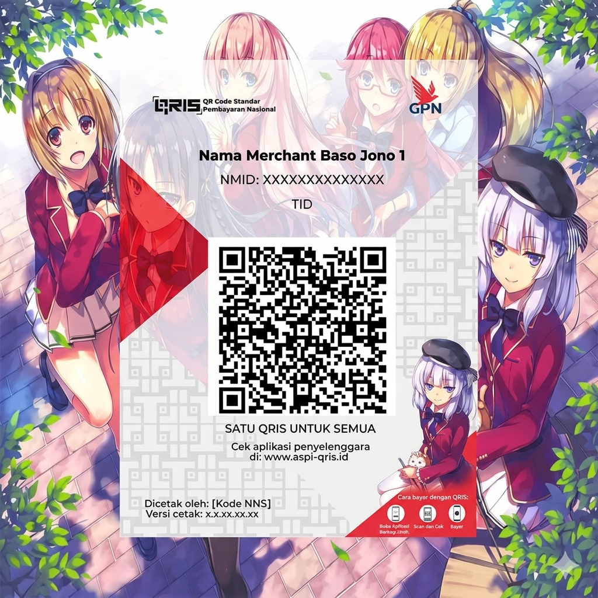

Sistem Informasi Akademik
/
Kantin
PROTOTYPE v0.1
01 Scan
—
02 Bayar
—
03 Dashboard
Simulasi Scan QR
Pilih meja yang akan disimulasikan di-scan oleh pengguna.
Pilih meja
Meja dipilih
—
Scan QR Meja →
Konfirmasi Pembayaran
Pilih kantin tujuan dan metode pembayaran.
Lokasi Meja
K1-05 (GKU 1)
Pilih kantin
Kantin A
Kantin B
Kantin C
Metode Pembayaran
Bayar lewat QRIS
Bayar Langsung (Kasir)
QRIS — Scan untuk bayar

Scan kode QR menggunakan aplikasi dompet digital.
Saya Sudah Bayar ✓
← Kembali
Monitoring Tempat Duduk
GKU 1 — Status meja real-time
Terisi
0
/ 3
Kosong
3
/ 3
Meja
Kantin
Status
Aksi